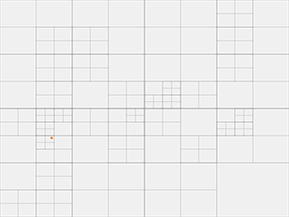
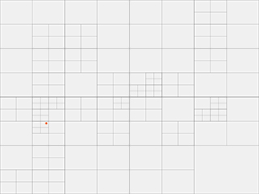
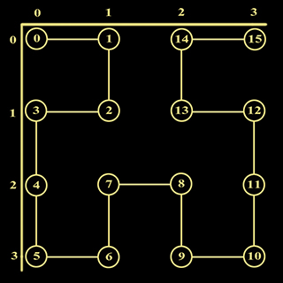
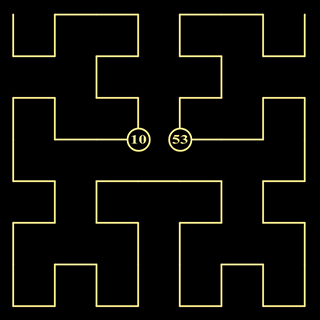
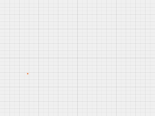

Location Based Service are software services which use geographic data to provide information/services to users. In today's connected world where almost everyone has a smart phone, LBS is integrated in multiple applications. Few uses:
The Simulation
We will take up two of the most common use cases in this simulation.
Imagine that you are a tourist in one of the most happening city, by the beach, let's call it Beach City.
You are here to party. To help you with that you have two awesome apps installed in your M-Phone on the right. These apps are minimalist in nature ... ie. they accomplish the main functionality only.
On the left is the map of the whole of Beach City. You will start right at the center of it. Click anywhere on the map to change your location.
Depending on which App is active, the map will be populated with all the POIs on it. So for NearBar, the Breweries and Pubs will shine in orange and violet respectively. For NearCar, live location of all the cabs (hired or available) will be shown. The violet ones will be the available cabs and hired cabs will be colored in orange.
A visual representation of the selected DB will also be rendered here for you to check how the query works out. The query area will be marked for clarity.
What's a party unless you are few pints down? As a tourist in a new place you want some way to locate where are the best breweries and pubs in the city.
Think Yelp.
It recognizes where you are and displays the popular places nearby and highlighted reviews of those places. You can share your own reviews, rate businesses, reserve a table (if possible) in your selected place.
Here we are just targeting the find places nearby part of the functionality.
You have done your share of pub-hopping for the day (or night). Time to recharge for the next day. But you are also a responsible citizen and you know Drink n Drive is a no-no.
Uber or Ola is the go to app to book a cab. Based on your location they give you the nearest cabs available, you can select car type, the charge for the ride will be displayed and you also get real time update on your app on where your cab is.
Again, we are just targeting the find me a nearby cab part of the functionality. (You can't actually book a cab). The difference with the earlier app is that here there the POIs were static and here they are dynamic.
Limitations of Traditional Database
To mark a location, we use Latitude and Longitude (here we use x and y coordinates).
Let's say we have a traditional database where we have stored all our Points of Interest with their locations. Now if we have the following query Find all Points of Interest from a specified location within a specified range (all breweries within 5 km). A typical query would look something like:
Essentially, this is a full table scan and needless to say that with more POIs added by the day, it's not a scalable query.
Spatial Database
Location Based Service operate on a specialized database optimized for storing and querying data representing objects in a geometric space. These databases are called Spatial Database and the queries Spatial Queries. In this segment we are focusing on the following properties:
Quadtree is a tree data structure used to partition a two-dimensional space by recursively subdividing it into four quadrants or regions. We will be using Region Quad Tree and create a Spatial Index for the data.
With this the search will be restricted to a much smaller scope and hence improving the performance manifold.
Given a point/location, find the quad/region where it belongs.
This is analogous to Binary Seach. The root node is the whole space. Recursively find in the subquadrants till a leaf node is reached.

Given a Point Of Interest, add it to the Quadtree.
When a POI is added, at first the quadrant/region where it is supposed to go is identified. The POI is then added to it. A thresh hold is set for the number of points a region can hold. If the new POI causes it to cross the thresh hold, the quadrant is subdivided into 4 sub quadrants and the POI added accordingly.
The star operation. Given a location and a range, find all POIs around the location within the range.
Start by making a square S of edge equal to range around the query location. Then recursively check for all quads that intersect S. Return POIs from all such quads.
Unlike traditional databases, the range query in Quadtree doesn't do a full table scan and only considers the quads that intersect with the query space.
Moreover, because of the heirarchical nature of the structure, the leaf node can be reached in logarithmic time complexity. In the below tree, the region which contains the point can be reached in 5 jumps.
root → bl → tl → br → tl → tr
where tl = top left quad, tr = top right quad, bl = bottom left quad and br = bottom right quad

Best for Static POIs:
The biggest hurdle is that the tree creation is totally dependent on data distribution. As the quads are created based on data density, if there are updates/deletes, it defeats the purpose of this data structure as it needs to be reshaped which will be an expensive operation. So the use cases are restricted to data which are more or less static and don't change much often.
Not balanced:
Since data is not evenly distributed (cities will have far more POIs than villages), some quads might go very deep while some quads might stay empty. This results in an unbalanced tree. Optimizations are available in form of Compressed Quadtrees where only subtrees with POIs are kept and empty nodes are pruned.
The basic idea of any space-filling curve is to contain an entire 2-dimensional square. Hilbert Curve is of the same family.
While we don't have good algorithms to search over a 2-D space, we do have excellent algorithms to perform the same over 1-D line. So if a 2-D space can be represented over a 1-D line, we have the solution to the problem. This is the motivation for space-filling curve.
The way the Hilbert Curve goes through the square is again analogous to breaking the original square into four quadrants, and then breaking each of those quadrants down into further quadrants.
Now we assign POIs to Hilbert Nodes based on their location in the square. What's a Hilbert Node? All the points where the curve turns, is a Hilbert Node. Theoretically Hilbert Curve can go to infinite levels so that every point on the curve can be covered, practically it's makes sense to represent a small region by a node.
Now that we know the way the Hilbert Curve can help with the problem, we need to look into some reductions in the current statement.
Map a co-ordinate to a Node
Every POI is marked by a co-ordinate (lat -long in the real world, in our case, x,y). I came across an iterative algorithm to draw a Hilbert curve of any given level. The main method hilbertIndex2xy(n), gives back normalized (x,y) co-ordinate of nth node. The algorithm is much better explained here. So while the nodes and co-ordinates are calculated to generate the curve, the same can be put into arrays for quick reference later.
The SQUARE restriction
Hilbert curve is drawn in a square. Even the algorithm mentioned above takes in units of 1. So for a 4 × 4 grid, node 0 starts at (0,0) and node 15 ends at (3,3). hilbertIndex2xy(2) = (1,1) and hilbertIndex2xy(8) = (2,2).

Our map is a rectangle of 640 × 480. While there are many algorithms out there to solve this, I took the easy way out for our simulation - I just scaled it. A 32 × 32 grid of rectangles where rectangle on the ith row and jth column corresponds to the co-ordinate (i,j) of a 32 × 32 unit grid.
With scaling put in and a cache to look-up (x,y) the Hilbert node, this problem is a trivial one now.
Given a co-ordinate, scale it down to map to the unit grid. Then use the cache to identify which Hilbert node, the co-ordinate corresponds to. Let's make the node as h. The range to search is also scaled down for the unit grid. Let's assume the range has been scaled down to scRange. Then all the POIs from nodes (h - scRange) to (h + scRange) are selected for range validation.
Over Traditional Database
Similar to the advantage that Quadtree has. Even here we avoid full table scans and access to data over the range can be made even more performant by having a segment tree or an interval tree over the Hilbert Codes.
Over Quadtree
Because the form of a Hilbert Curve depends on the number of nodes rather than the number of POIs on it, it can take in dynamic POIs.
Range to Offset approximation
The major (at least that's what I feel) limitation is the range calculation accuracy for the nodes. Let's take the same curve from before.
Let's say that I have a query to search for POIs around (1,1) for a range of 1. Now we know (1,1) corresponds to Hilbert node 2. So the range is from node 2 ±1. This includes (1,0), (1,1) and (0,1).
What about (0,0) and (0,2)?
If the offset is doubled to the range to search, ei, from node 2 ±2, the above co-ordinates would be covered. But we still haven't covered (1,2), (2,3), (2,1) and (2,0). To cover all of them, a range of 1 has to have an offset of ±12 in this case. But that would also include nodes 5, 6, 9, 10, 11 and 12 which are clearly out of range. This gives us a lot to think about when fine tuning range to offset calculation.
Edge Cases
The above problem can be minimized by having a higher order of Hilbert Curve. The more dense the curve is, the range to offset approximation gets better.
But there are still edge cases where while the co-ordinates are nearby in reality, but Hilbert node wise they are really faaaaaaar away. This is even more evident in the nodes near the intersection where the quadrants meet. Take a look into the below Hilbert Curve of Oder 3. Hilbert Nodes 10 and 53 are only 1 unit distance apart.

Geohash encodes a geographic location into a short string of letters and digits. Essentially, it reduces a proximity search problem into a string prefix matching one.
Actual implementation divides a region into 32 subregions and so on starting with the whole world. The latitude and longitude of a location based on its precision can be mapped to a subregion quite granular in nature. Every region is denoted by a letter added to its parent. So we start with 32 regions from 0-9, a-z (minus a,i,l,o), and for every region, we have 32 subregions (again with alphanumeric denotions), and for every one of those subregions, we have 32 sub-subregions ... and so on.
A geohash kput would denote a subregion 4 levels deep with ancestors k, kp, kpu. A geohash of length 9 points to a region of approx 5m × 5m. The longer the prefix of 2 geohashes match, the closer they are. Note that the converse is not true.
In our simplified version here, we keep subdividing the world into 4 regions recursively upto a depth of 5 giving us a 32 × 32 grid. This should be enough for our application.
The most important function. In our simplified world we have a simplified hash technique.
Given a location, we keep performing a binary search on x and y axes and assign quadrant chars accordingly to have the hash for the specified depth.

To find all POIs around the location within the range, first we find the corresponding region of the location. Depending on the range, the region size can be adjusted ( basically dive to appropriate hash level). eg if range is 30, the region will be fetched from a depth of 5 while if it is 70, the region will be fetched from level 4.
To account for location near the edges and corners of the found region, the neighbors are also selected to contribute to the POI list to be returned.
To properly cover a query area, we need to look beyond the current region. We have to quickly find the surrounding regions to look for POIs in it.
We will use few interesting properties of the hash to find the neighbors.
For any region, its neighbor will be either a sibling quadrant or a sub-quadrant of it's parent's sibling. Below I have how to get the north and north west neighbor. Same idea for the rest.
Over Traditional Database
Similar to the advantage that Quadtree and Hilbert Curve has. Even here we avoid full table scans. The query is extremely performant as we are hashing out the regions. On a large scale, the database can easily be distributed based on region hash.
Over Quadtree
Since we are assigning hash to a region and then associating each POI to that hash based on their location, this database can also take in dynamic POIs.
Moreover hash index queries are inherently faster and updates to a POI (delete from old region and adding to an new region) will be a breeze.
Over Hilbert Curve
The range approximation and edge case limitations are non-existent here because of the neighbor find intermediate step. Unlike Hilbert Curve, all the regions around the query location are taken into account.
Debug On
Cool On
Most of the sites I visited on Hilbert Curve had this animation on. Resistance is futile!
Wikipedia for Location Based Service, Spatial Database, Quadtree, Geohash Space filling curve.
Inspired from here.
This blog on Hilbert Curve
This blog on Geohash.